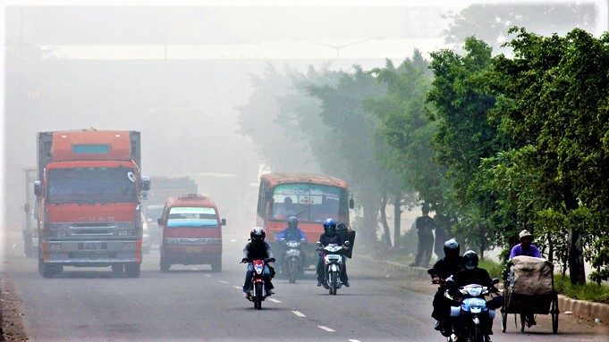

Mengurangi Polusi Udara

Polusi udara disebabkan oleh banyaknya orang yang lebih memilih menaiki kendaraan berbahan bakar seperti motor, mobil, atau bus dan lainnya yang memang membuat mereka cepat sampai ke tujuan. Tapi jika dipikir lagi, bangun lebih pagi dan mengayuh sepeda atau berjalan kaki setiap hari akan sangat banyak sekali manfaatnya. selain mengurangi polusi udara, bersepeda maupun berjalan kaki dapat meningkatkan kebugaran kita, menghemat pengeluaran untuk biaya bahan bakar, dan bahkan dapat juga mengurangi kemacetan di jalan raya.
Apabila semua orang memakai sepeda untuk sekedar pergi berangkat kerja (tidak termasuk luar kota), berangkat sekolah, atau semacamnya, maka jalanan kita mungkin bisa tidak menggunakan lampu lalu lintas. Resiko kecelakaan dengan mengayuh sepeda mungkin hanyalah jatuh ataupun terpeleset. Bahkan resiko bertabrakan dengan sesama sepeda hanyalah akan menghasilkan luka-luka ringan.
Sedikitnya populasi pohon di Indonesia yang disebabkan oleh penebangan hutan secara liar juga merupakan faktor utama polusi udara. Ini karena ulah manusia yang tidak bertanggung jawab dengan seenaknya menebang pohon untuk keperluan mereka sendiri, sehingga menyebabkan tidak adanya fotosintesis yang menghasilkan Oksigen dan membersihkan udara dari zat yang berbahaya seperti: Zat nitrogen dan karbon dioksida. Penyebab ini juga mengakibatkan kebakaran hutan yang ada.
Pembangunan gedung-gedung di Indonesia sangat menutup kemungkinan untuk penghijauan. Lahan-lahan kosong yang bisa dimanfaatkan malah dipergunakan untuk membangun mall-mall, perumahan mewah, gedung perusahaan dan sebagainya. seperti kita tahu bahwa saat ini mall-mall sudah tersebar keseluruh penjuru kota. Bisa 1-2 mall, bahkan lebih. Menurut saya, 2 mall saja dalam 1 kota sudah cukup. Tapi masih banyak kota-kota yang terus melakukan pembangunan mall.
Penghijauan sangatlah dibutuhkan untuk saat ini. Gerakan penghijauan merupakan salah satu contohnya. Satu pohon saja dapat berfotosintesis dan menghasilkan berjuta-juta zat Oksigen dan juga mengurangi berjuta-juta zat karbon, bagaimana jika seribu pohon?
Share


Ikuti Kami